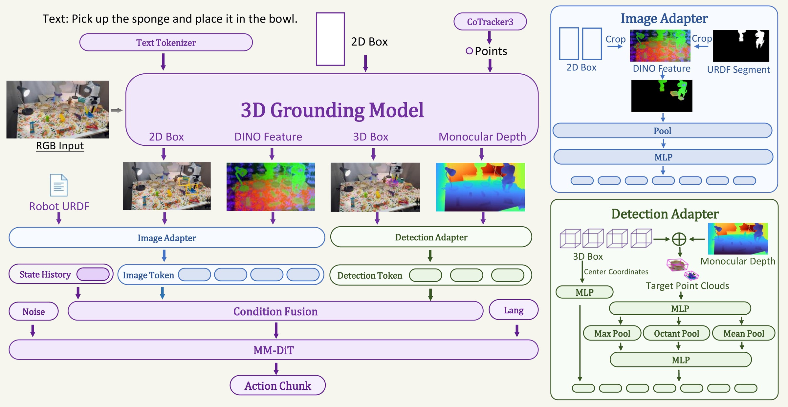
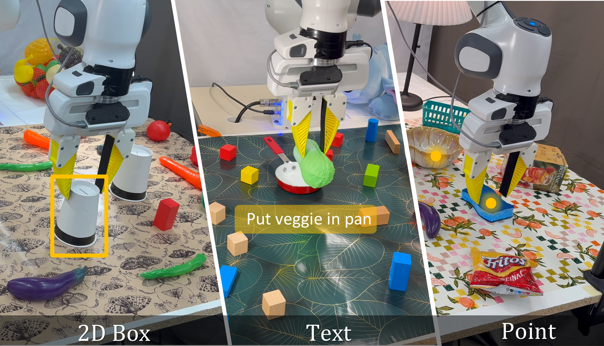
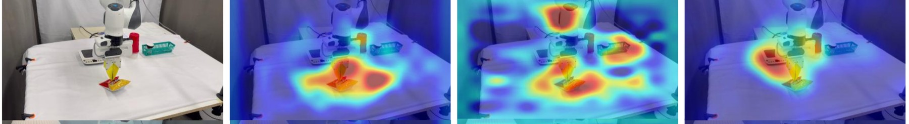

Abstract
Manipulation policies must know which objects matter and where they are, yet the pretrained backbones that current robot foundation models build on, from language in vision-language-action models (VLAs) to video generation in world-action models (WAMs), do not directly require this metric grounding, leaving it to be learned implicitly from robot demonstrations. We propose Grounded Action Models (GAMs), a new paradigm of robot foundation models built with 3D grounding. GAM can be conditioned using language, points, or box prompts, which are first transformed into a shared object-centric representation of the selected objects. This representation captures target-focused visual features and metric object geometry, which is mixed with robot state history through a multi-stream transformer to predict action chunks. Although GAMs can be run autonomously, they can also serve as a low-level controller that a high-level planner controls using its various input modalities, allowing for long-horizon and memory-dependent manipulation. On RoboTwin 2.0, GAM achieves an average success rate of 55.3% across 50 tasks (vs. 52.0% for Spatial Forcing), including 47.6% under scene randomization (vs. 30.4% for Abot-M0), with its action policy trained only on clean-scene demonstrations. On LIBERO-PRO, it achieves a state-of-the-art average success rate of 61% (vs. 53% for π0.5) across 16 perturbation settings, with the largest gains when targets are relocated or newly designated. On two real robots, GAM retains 17/20 successes under visual shift on a bimanual YAM versus 4/20 for π0.5, while its composition with a Molmo2 planner on a Franka achieves 64.7% ID and 49.8% OOD step completion on long-horizon and memory-dependent tasks.
GAM in action
The same policy on two real robots, prompted by a click, a 2D box, or a Molmo2 planner, in distribution and under visual shift.
GAM rollouts on Franka
From prompt, to detections, to two streams of tokens
At time t the frozen grounding backbone (WildDet3D) receives the RGB image and the task specification, and returns, for each of the N task objects, a 2D detection box and a metric 3D box, plus a dense metric depth map and its own dense visual features. Everything the action head sees is built from those.

What gets grounded is what the policy sees
The backbone accepts a language instruction, a 2D point, or a 2D box, and all three land in the same place: a set of detected objects with metric geometry. Language is one way to name a target, not the only one, which matters when several objects share a description, or when a planner has already decided which one it means.

All three give the same output: a 2D box, a metric 3D box and depth for each object.
RoboTwin 2.0: the gap opens where the scene is randomised
Fifty bimanual tasks, each evaluated clean (Easy) and randomised (Hard). GAM trains one policy per task on the 50 clean demonstrations the benchmark provides, and 100 rollouts are evaluated per task in each setting. No method is trained on the randomised setting. Clean success is crowded: ten of the seventeen entries clear 60%. Hard success is where the methods separate, and it separates by what the observation contains.
Clean success vs. randomised success
Each point is one leaderboard entry. A method on the dashed line keeps all of its clean performance under randomisation; every entry sits below it.
| Method | Easy | Hard | Avg. | Retention |
|---|
† single-task training (one policy per task); unmarked entries are co-trained on all 50 tasks. Retention is Hard ÷ Easy. Baseline numbers are those reported by the RoboTwin 2.0 team, except π0.5, trained and evaluated by us under the same single-task protocol.
LIBERO-PRO: which perturbations actually break a policy
LIBERO-PRO keeps the LIBERO training data, where every task has one fixed object layout, and perturbs the tasks at test time along four axes. Obj (appearance and size) and Sem (phrasing) leave the layout and the goal intact. Pos moves the target; Task replaces the instruction with one naming a different object in the same scene. The split between those two pairs is the whole story.
Success rate across 16 settings
Rows ordered by average, as in the paper. Hover a cell for its setting.
Real robots: a click, and a planner that clicks for you
On a bimanual YAM, a human designates the target directly, by a click or a box for GAM and language for π0.5. On a single-arm Franka, a Molmo2 planner picks targets through the same point interface and language supplies only the operation, so the action policy never changes across sub-tasks.
Bimanual YAM: the same task, shifted visually
π0.5 language interface
GAM click or 2D box
Franka: long-horizon and memory-dependent tasks
Step completion rate
Completed steps ÷ total steps, over 20 ID and 10 OOD trials per task. OOD changes backgrounds, lighting, object instances and colours, and adds distractors.
Where the attention goes

Both filters matter, and so does having both streams
Ten RoboTwin 2.0 tasks, 20 rollouts each in Easy and Hard, with backbone, action head, training data and schedule held fixed. Whole-scene point clouds keep the same point budget. Every variant shares the same frozen backbone, so nothing here comes from stronger perception.
Observation ablations
BibTeX
@misc{zhang2026groundedactionmodel3d,
title = {Grounded Action Model: 3D Grounding as a Foundation for Robotics},
author = {Gehao Zhang and Weikai Huang and Shailesh Shailesh and Yiyan Peng and Jiafei Duan and Ranjay Krishna},
year = {2026},
eprint = {2609.23863},
archivePrefix = {arXiv},
primaryClass = {cs.RO},
url = {https://arxiv.org/abs/2609.23863}
}